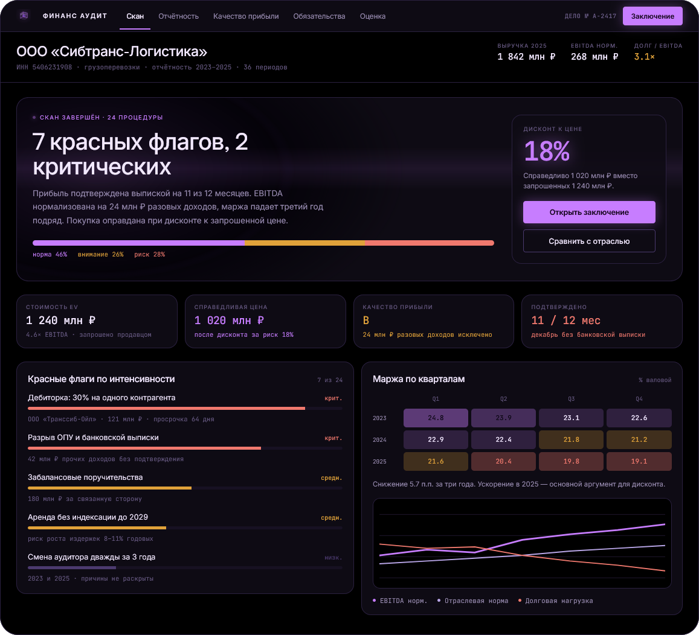
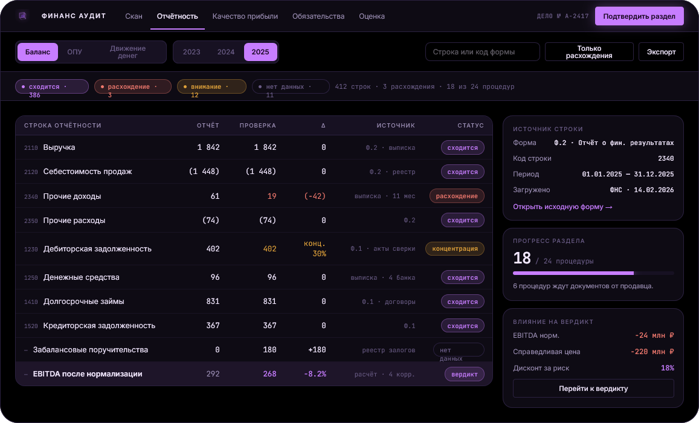
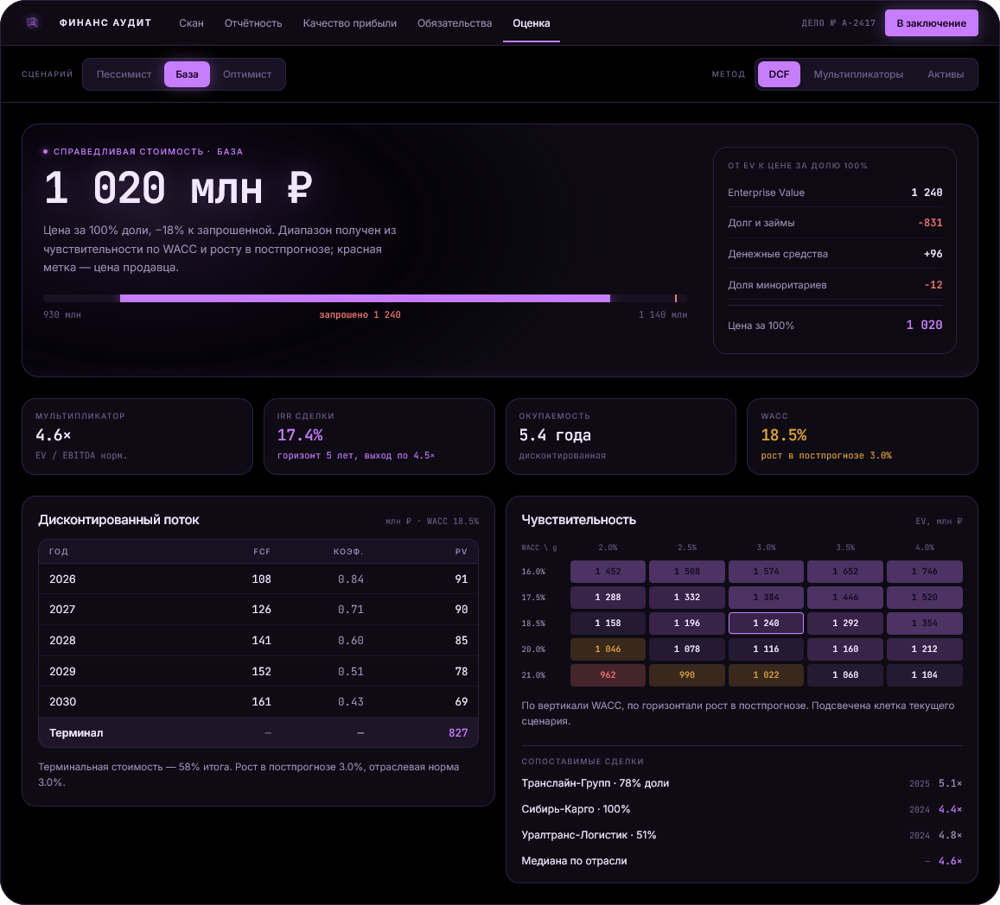

Две платформы для тех, кто вкладывает и покупает: «Финанс-Элит» проверяет проект, «Финанс Аудит» — фирму.
Разница между ценой продавца и справедливой ценой — это не торг. Это стоимость рисков, которые кто-то не посмотрел.
Формы сходятся, аудитор подписал, а половина рисков живёт вне баланса и в пояснениях, которых никто не читает.
Загрузили ИНН — через четыре минуты видно вердикт, семь красных флагов и разницу между ценой продавца и справедливой ценой.


Не сноска на последней странице, а подсвеченная строка, от которой можно провалиться в банковскую выписку.
Минус 8,2% к цифре продавца. При мультипликаторе 6,6× это 158 млн ₽ разницы в цене — до всяких переговоров.

Даже верхняя граница диапазона ниже цены продавца. Это уже не мнение аналитика, а свойство модели.
Скорость нужна не сама по себе: она даёт возможность торговаться, пока сделка не подписана.
Один процентный пункт дисконта в сделке на миллиард — это 10 млн ₽. Проверка стоит 45 тысяч.
В аккаунте лежит готовое демо-дело со всеми находками и заключением. Ходите по нему как по своему, а когда будете готовы — введите ИНН цели.